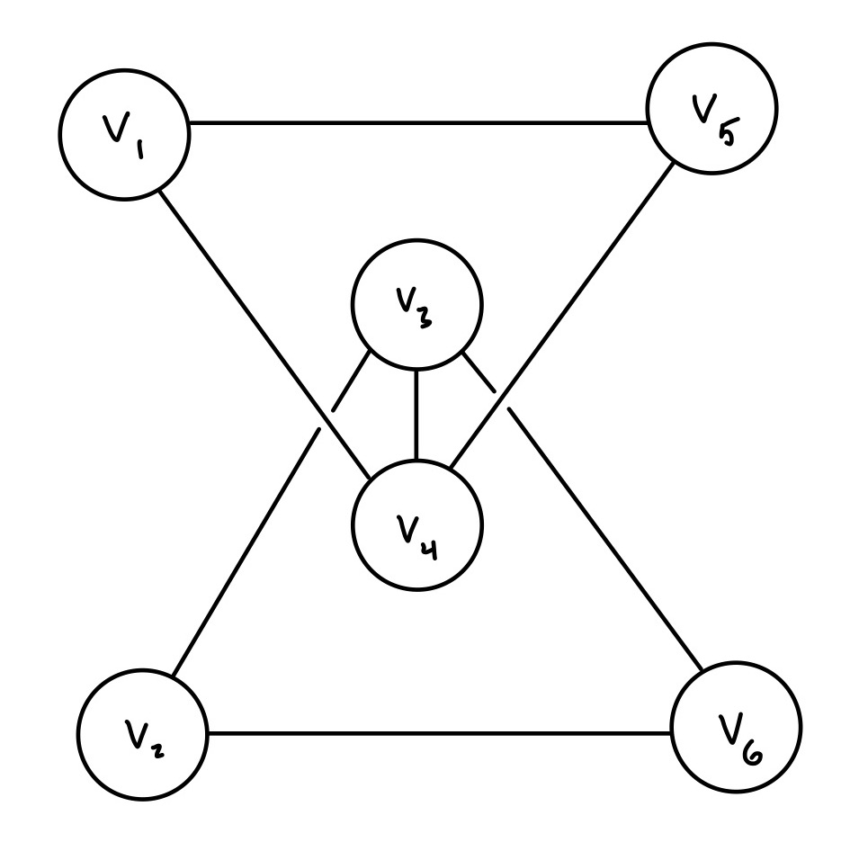

Homework 6
Table of Contents
The following assignment is due Thursday 10/17 by 11:59 PM. You should submit all your written solutions to Gradescope as a single pdf. Follow the instructions in the programming problem for code solutions.
- Your solutions must be exceptionally neat and the final answer in your solution to each problem must be abundantly clear, e.g., surrounded in a very visible box. The graders have license to dock points for illegible or unclear solutions.
- For the written part, choose the correct pages corresponding to each problem in Gradescope. Note that Gradescope registers your submission as soon as you submit it, so you don't need to rush to choose the pages. You will receive no credit if you do not choose the correct pages, no exceptions.
1. Matrix Inverses
Compute the inverses of each of the following matrices. You must show
you work. You may use sympy.rref() or a.inv() to check your
answer but your work must clearly show the steps you took by
hand.1
1.1. (3 points)
1.2. (3 points)
1.3. (4 points)
Leave your answer in terms of \(\cos \theta\) and \(\sin \theta\). Recall that \(\sin (-\theta) = -\sin \theta\) and \(\cos(-\theta) = \cos\theta\). Hint: Find a matrix \(A\) such that the above matrix is \(A\) times the rotation matrix. Then find the inverse of the product of matrices.
2. Matrix Powers
2.1. (5 points)
Compute the following matrix expression. You must show your work. Your answer should be a single matrix with entries given in terms of \(n\). Note that \(A^{-n}\) is the same as \((A^n)^{-1}\).
2.2. (5 points)
Determine the smallest positive integer \(n\) such that the above equation holds. You must show your work.
3. Matrix Algebra
3.1. (5 points)
Let \(A\) \(B\) and \(C\) be matrices such that \(A = A^{-1}\) and \(C = C^T\) and
\begin{align*} A(C^{-1}(AB)^T)^T C \end{align*}is a well-defined matrix product. Simplify this expression using the algebraic properties of matrix operations. You must show your work.
3.2. (5 points)
Determine three matrices in \(\mathbb R^{2 \times 2}\) that satisfy the above equation. You must show your work. In particular, you must demonstrate that each matrix in your solution satisfies the equation.
4. Laplacian Matrix
Let \(G = (V, E)\) be a graph with \(n\) vertices \(v_1, v_2, \dots, v_n\). In class we discussed the \(n \times n\) adjacency matrix given by
\begin{align*} A_{ij} = \begin{cases} 1 & (v_i, v_j) \in E \\ 0 & (v_i, v_j) \not \in E \end{cases} \end{align*}There are many other matrices based on graphs. One is the \(n \times n\) degree matrix given by
\begin{align*} D_{ij} = \begin{cases} \deg(v_i) & i = j\\ 0 & i \not = j \end{cases} \end{align*}where \(\deg(v)\) is the number of edges adjacent to \(v\). Another is the \(n \times n\) Laplacian matrix given by
\begin{align*} L = D - A \end{align*}For the following two graphs, write down
- its adjacency matrix
- its degree matrix
- its Laplacian matrix
- the number of pivot columns in its Laplacian matrix
4.1. (5 points)
This graph is made up of two disjoint triangles, one with vertices \(v_1, v_4, v_5\) and one with vertices \(v_2, v_3, v_6\).
4.2. (5 points)

This graph is the same as the previous graph but with an additional edge connecting \(v_3\) and \(v_4\).
5. Six Degrees (Programming)
The game six degrees of Kevin Bacon is played as follows. The challenger chooses any actor \(A\), and the player needs to come up with a sequence of actors starting with Kevin Bacon and ending with actor \(A\) of length at most seven2 with the restriction that adjacent actors in the sequence have appeared in at least one film together.3 This in principle works because Kevin Bacon has been in a lot of films, so it's almost always possible to come up with such a sequence, and there are Bacon sequence generators all over the Internet.
When we analyze this game formally, the situation depends quite a bit on the data. In the dataset you will be analyzing for this problem, which includes only a subset of the most popular movies on IMBb from the years 1974-2021, not only is Kevin Bacon not the most well-connected actor, but nearly every actor is within six degrees of every other actor.4 So in this problem, we're interested in the egde cases.
You're given start code in the file hw06.py. Please do not change
the name of this file when you submit it, nor the names of functions
or variables included in the starter code. You're allowed add your
own functions but you're not expected to. You should only need to
fill in the TODO items in the starter code.
You're also given a costar network in the file
costar-network.edgelist.gz5, which is a simple graph in which two actors are
connected by an edge if they've been in a film together. Therefore,
playing the six-degrees game is a matter of finding a path in this
graph of length at most 6.
The network is represented as a list of edges which can be read in by NetworkX. If you're interested, you can uncompress it to see which actors are connected by which movies.
Finally, you're given a file called costar.py which builds the
adjacency matrices for the given network and build the matrices used
to reason about reachability. You should look through this file to
get a sense of how to work with NetworkX.
You're required to implement the functions:
at_least_k_steps_matrix(a, k)reach(a, j)max_reach(a)doesnt_have_max_reach(a)
You're also required to fill in the variables:
disconnected
with the appropriate values. See the starter code for more details about these functions and variables.
You'll upload a single python file hw06.py to Gradescope with your
implementation of the TODO items. There is a small subset of provided
tests which you can run using the command python3 -m
unittest. Note: We're only grading your code in hw06.py. Please
do not include any computations on the costar network in this file,
such computations will be too costly for our autograder and it may not
be able to grade your code.
Footnotes:
For example, if you row-reduce, you don't have to write down the reductions you used, but your work should clearly indicate the steps you took to getting to the final RREF.
Kevin Bacon is zero degrees from himself.
It's usually also a part of the game to come up with the films themselves, but another variation is to omit the movies and check that the challenger can verify the sequence.
So if we're playing this game with people who don't know the random indie films that actors have been in, then the choice to start with Kevin Bacon is not so interesting.
It was generated from this Kaggle dataset.